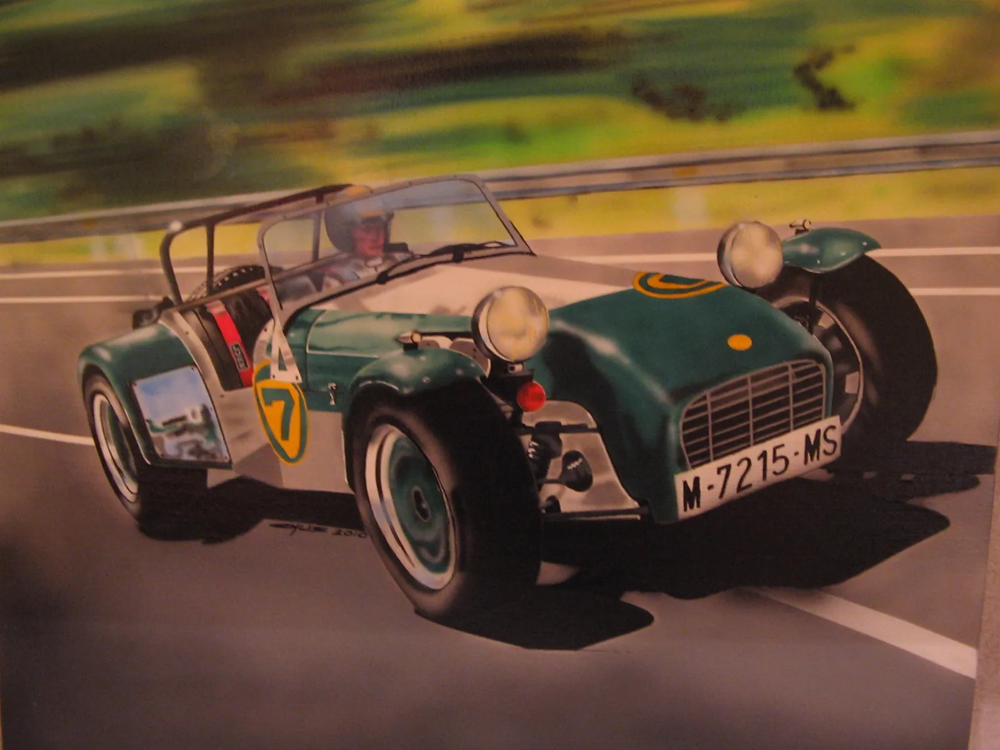

Saltar al contenido
Proyectos
Sobre
Contacto
010
Mayo de 2011
Otros soportes
Lotus Seven
Aerografiado sobre lienzo.
1 fotografía

Anterior · 011
Casco Mustang P51
Siguiente · 009
Casco de karting Juan Manuel García